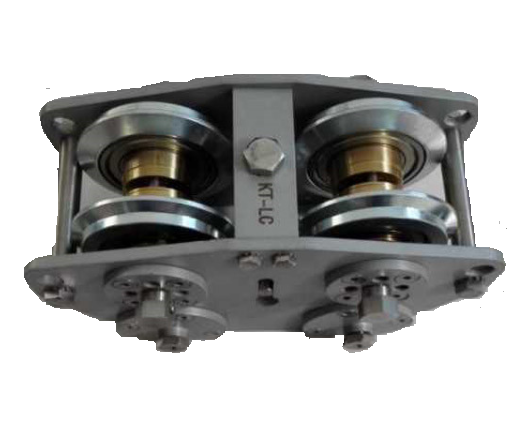
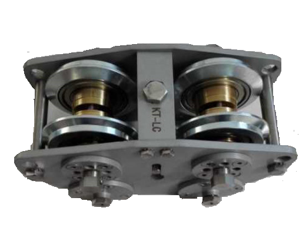

接触网放线小车
 

总体介绍
放线小车(F+F)是将接触线嵌入汇流排钳口的专用工具，它可以安放在汇流排线路的任何点进行放线。放线小车(F+F)设有调节螺栓可以调节汇流排钳口的扩张度和接触线的高度，把汇流排的弹性钳口张开，让接触线进入钳口，当小车滑过后，钳口自然收拢,把接触线钳紧。放接触线时，放线小车可利用工程车牵动，与电动涂脂装置和有关设备一起联合作业。
工作原理：
放线小车适用于安装架镶刚性悬挂系统铝合金汇流排的铜接触线，适用PAC110型汇流排，放线小车通过自身的定位轮、导轮、中间顶位装置以及外力辅助作用下将接触线镶入汇流排钳口中，由汇流排自身钳口张力夹持接触线。其中，导轮在放线过程中起导向和支撑作用；定位轮起撑开汇流排钳口作用。由于定位轮的作用，接触线被镶入汇流排中，随着小车的前进，接触线被循序渐进的镶入汇流排中。
技术参数
1、放线速度：5km/h；
2、滑轮调整范围：60-92mm；
3、张紧轮调整范围：58-79mm；
4、外形尺寸：320*186*175mm；
5、重量：16kg；
6、标准配置：放线小车、合格证、说明书、包装箱。